OTIUM — практика нарочитого досуга. В античном смысле otium — не побег от работы, а время, когда внимание возвращается к памяти, пейзажу и мысли — без прикладного дедлайна.
Мы выстраиваем маршруты для неспешного присутствия, а не для чек-листа достопримечательностей: важно быть в месте, а не «потреблять» виды.
OTIUM — не туроператор. Это приглашение пройтись, остановиться и оставить маршрут незавершённым, если свет на фасаде заслуживает ещё минуты.
Исторические и справочные гербы
Athens
Путеводитель. Объектов в этом выпуске: 29.
Историческая справка
Афины — столица Греции, один из древнейших европейских городов с непрерывной историей поселения.
Античный полис, римский и византийский периоды, османская эпоха и независимое государство сформировали слойную городскую среду: акрополь, классические руины, неоклассика и XX век. Афины остаются узлом культуры, образования и средиземноморской метрополии.
В XIX веке столица перенесена в Афины; независимая Греция восстановила классические символы на фоне османского наследия. XX век принёс расширение агломерации, Олимпиаду 2004 года и современную инфраструктуру; Афины остаются важным узлом Средиземноморья.
Маршруты
Один день
Компактный маршрут по главным точкам путеводителя с минимальным возвратом назад пешком.
Здание музея построено над древними археологическими раскопками. Архитектор проекта — швейцарский архитектор Бернард Цумми. Стеклянные фасады позволяют видеть античные сооружения прямо через стены музея. Экспозиция включает экспонаты, найденные во время археологических исследований Акрополя. Открытие музея состоялось в сентябре 2009 года.
Археологический музей Акрополя был открыт в 2009 году архитектором Бернаром Цумми. Здание расположено непосредственно над археологическими раскопками и стало важной частью культурного наследия Афин. Архитектура музея сочетает современные стеклянные фасады и бетонные конструкции, гармонично вписываясь в окружающий исторический контекст. Музей позволяет посетителям увидеть уникальные артефакты древней цивилизации прямо над местом их обнаружения, создавая уникальную атмосферу погружения в историю.
Athens Ancient Agora
Стиль: Стоа, булевтерион, основания храмов
Агора существовала с архаического периода до римской эпохи. Здесь находились общественные здания, такие как портики (стои), храмовые постройки и трибуна для народных собраний. На территории археологического памятника сохранились фундаменты храмов и стои. Афинанская агора служила местом проведения политических дискуссий и судебных заседаний. Считается, что именно в этой агоре впервые были приняты демократические реформы Солона.
Древняя агора Афин возникла ещё в архаический период и функционировала до римского завоевания города. Это был важнейший общественный центр античных Афин, где проходили торговые сделки, политические дебаты и культурные мероприятия. Агора была сердцем афинской демократии, здесь собирались граждане для обсуждения государственных вопросов и принятия решений. Запоминающийся факт: именно здесь были впервые введены демократические законы Солона. Посещение Древней агоры позволяет увидеть архитектурные остатки одного из важнейших общественных центров древних Афин и лучше понять устройство и жизнь античной демократии.
Athens Hadrian Arch
Стиль: Римский триумфальный арх со стилевыми элементами коринфского ордера.
Архитектурный ансамбль включает две симметричные полуколоннады с коринфскими капителями. На арке сохранились рельефы, изображающие сцены военных побед и достижения империи. Считается одной из лучших сохранившихся римских триумфальных арок. Адрес сооружения — Леофорос Василисис Амалас. Рядом расположена площадь Синтагма.
Триумфальная арка Адриана была возведена в Афинах в 131 году н.э. по приказу императора Адриана в честь его визита в Грецию и успехов римского войска. Арка стала важным символом культурного обмена между Римской империей и греческой цивилизацией, демонстрируя уважение Рима к эллинскому наследию. Архитектурный стиль арки сочетает элементы древнеримского триумфального арочного зодчества с традициями коринфского ордера, характерного для греческого искусства. Арка Адриана является одним из ключевых памятников античной архитектуры в Афинах и привлекает туристов своей величественной архитектурой и историческим значением.
Athens Benaki Museum
Стиль: ар-деко | Период: 1930
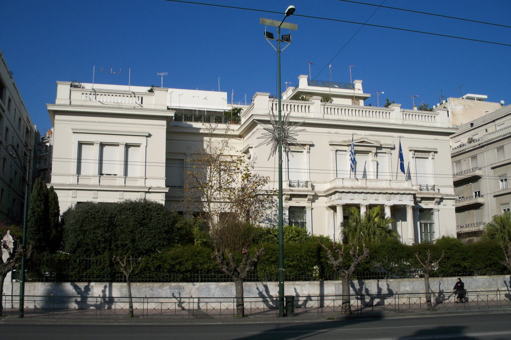
Коллекция музея включает около 8 тысяч экспонатов, охватывающих различные эпохи греческой истории. Особняк, в котором размещается музей, является памятником архитектуры ар-деко. Константин Бенакис был известным филантропом и меценатом, активно поддерживавшим культурное наследие Греции. Музей Бенаки ежегодно привлекает тысячи туристов и местных жителей благодаря своей уникальной экспозиции. На территории музея регулярно проводятся выставки современного искусства.
Музей Бенаки основан в 1960 году коллекционером Константином Бенаки, который собрал уникальную коллекцию предметов греческого искусства разных эпох. Музей расположен в историческом особняке начала XX века, построенном архитектором Николаосом Балтасисом в стиле ар-деко. Один из ведущих музеев Греции, предлагающий посетителям погружение в историю и культуру страны через обширную коллекцию артефактов, начиная от античных времен до современности.
Athens Byzantine Museum
Период: 1889
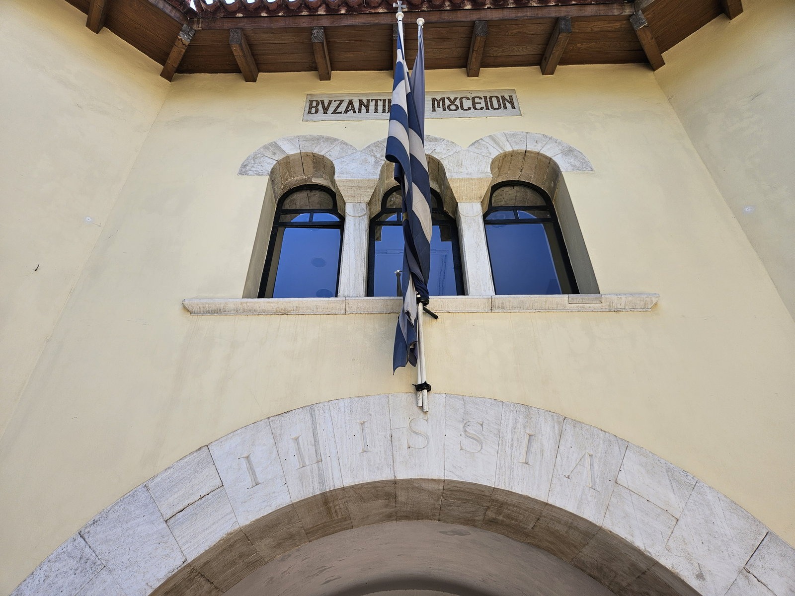
Коллекция музея насчитывает около 4 тысяч экспонатов, включая мозаики, иконы, рукописи и предметы быта. Здесь представлены уникальные находки из археологических раскопок древнего города Фивы. Экспозиция рассказывает о развитии архитектуры, искусства и религии Византии. Особое внимание уделено истории Храма Святой Софии, который был центром духовной жизни Константинополя. Посещение музея позволяет увидеть редкие образцы средневекового искусства.
Музей основан в 1976 году на месте бывшей резиденции короля Георга I Афинского. Коллекция музея включает артефакты византийской эпохи и раннего христианства, отражающие культурное наследие древней столицы Византии и современного греческого государства. Главная цель музея — сохранение и популяризация культурного наследия Византии и раннего христианства.
Athens Panagia Kapnikarea
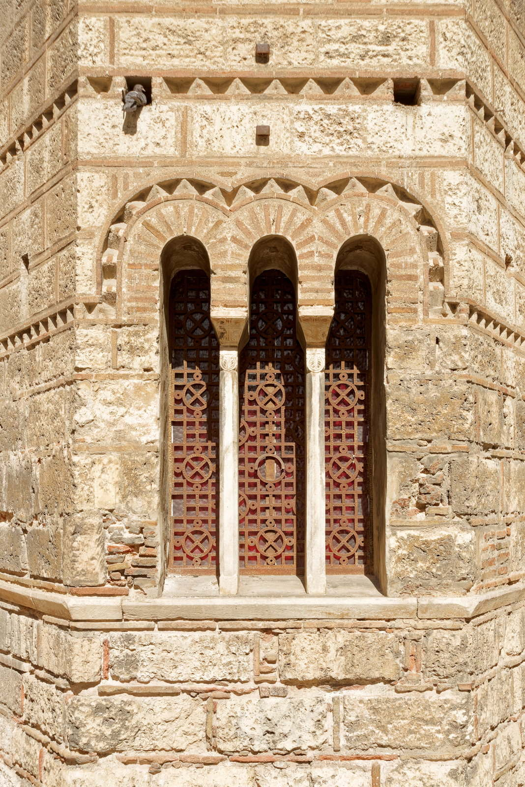
Церковь Панагии Капникареа — это место поклонения в Афинах. Общественные фотоархивы ассоциируют это место со: островом Крит, отпусками, Панагия Кера и церковью. Стоит заехать во время исследования Афин.
Athens Filopappou
Период: III век н.э.
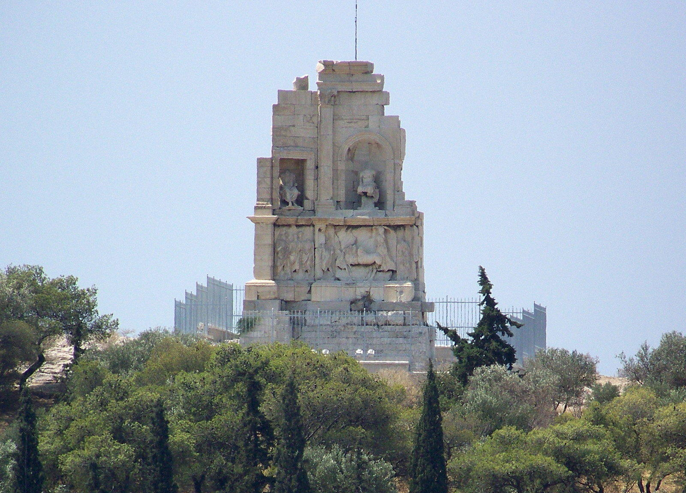
На вершине холма расположен храм Афины Полиас, построенный в честь сенатора Публия Элий Филопаппа. С вершины холма открывается вид на центральную часть города и порт Пирей. Холм окружён зелёной зоной с ухоженными дорожками и скамейками. Название холма происходит от имени римского сенатора, поддержавшего строительство храма. Филопаппу холм часто посещают туристы и местные жители, чтобы полюбоваться закатом.
Филопаппа холм получил своё название в честь римского сенатора Публия Элий Филопаппа, который пожертвовал средства на строительство храма Афины Полиас в III веке н.э. Холм долгое время был местом прогулок аристократии и знати, а сегодня является популярной смотровой площадкой с панорамным видом на город и Акрополь. Здесь открывается живописная панорама города и величественный силуэт Акрополя, позволяющий насладиться красотой античной архитектуры.
Greek Old Royal Palace on fire
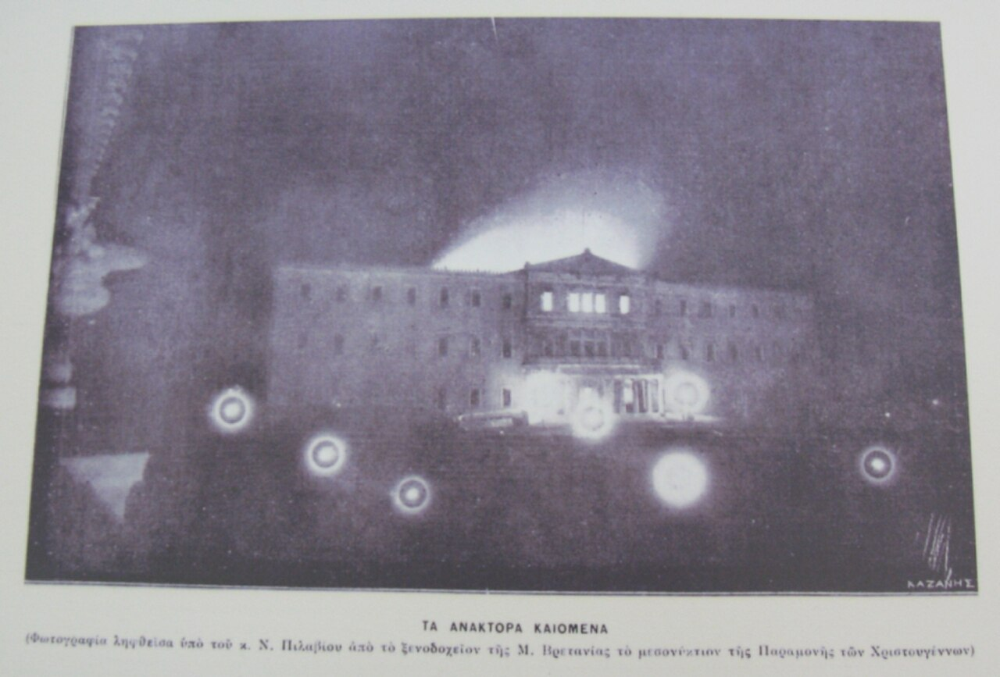
Старый Королевский Дворец в Греции является достопримечательностью Афин. Общественные фотоархивы ассоциируют это место с: великой галереей, памятником, архитектурой, строительством.
Athens Hadrian Library
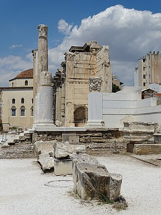
Согласно публичным фотоархивам, данное место ассоциируется с: мост, река, Кастель Сант-Анджело, достопримечательность.
Athens Kaisariani
Стиль: византийский стиль
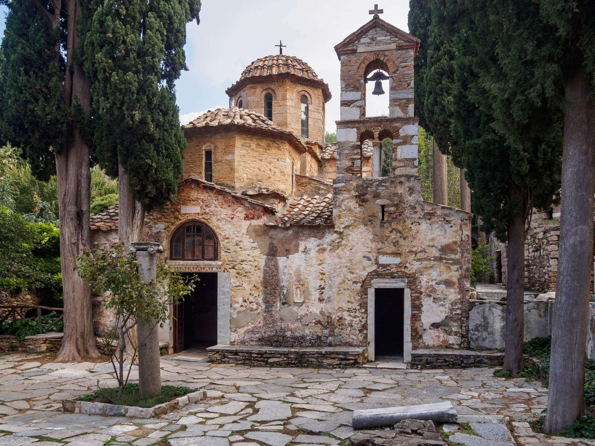
Основан в XIII веке. Расположен в живописной местности Кесариани, неподалеку от Афин. Известен панорамными видами на окрестности. Является важным религиозным центром для православных христиан. Обладает уникальной архитектурой византийского стиля.
Кесариани монастырь расположен недалеко от Афин и является одним из старейших афинских монастырей. Основан в XIII веке, во времена правления династии Ласкарисов, когда Афины находились под властью Византийской империи. Монастырь знаменит своей живописной природой и впечатляющими видами на окрестности, благодаря чему стал популярным местом паломничества и отдыха. Монастырь привлекает туристов своими уникальными пейзажами и историческим значением, отражающим культурное наследие региона.
Athens Kerameikos
Стиль: древнегреческий
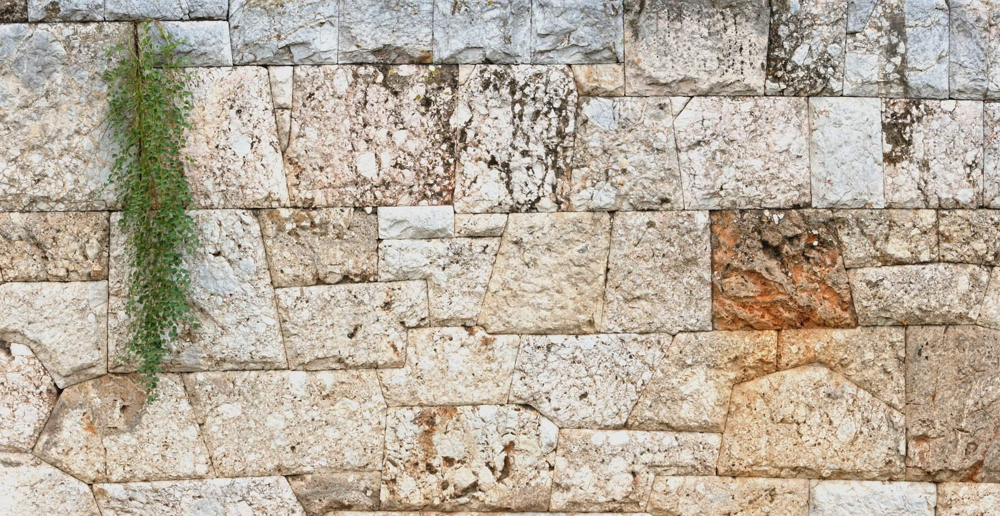
На кладбище находятся захоронения выдающихся государственных деятелей и философов Древних Афин. Здесь расположены древние гробницы и некрополи, датируемые VII–IV веками до н.э. Керемейкос был местом проведения знаменитых панафинейских празднеств, посвящённых богине Афине. Археологические раскопки на территории некрополя продолжаются и сегодня. Рядом с кладбищем находится музей, где представлены экспонаты, найденные во время археологических исследований.
Некрополь КерAMEЙкос расположен рядом с древним Афинским городом-государством и является одним из старейших кладбищ Греции. Здесь хоронили афинян начиная с VIII века до н.э., вплоть до римского периода IV века н.э. Это место знаменито своими погребальными сооружениями, мраморными стелами и надгробиями, многие из которых сохранились до наших дней. В древности здесь также находился знаменитый стадион Панафинейских игр, где проходили спортивные соревнования. Кладбище Керемейкос позволяет увидеть уникальные образцы древнегреческой архитектуры и скульптуры, сохранившиеся до наших дней.
Athens Monastiraki
Стиль: смешанный стиль, включающий элементы османского периода и неоклассицизма
Район расположен рядом с археологическими раскопками древнегреческой Агоры. Рынок Монастираки является одним из старейших и крупнейших рынков Афин. Здесь находится знаменитый блошиный рынок, где продаются антиквариат и винтажные вещи. Рядом расположены знаменитые кафе и рестораны, предлагающие блюда традиционной греческой кухни. В районе также находятся несколько музеев и исторических памятников.
Монастираки — исторический район Афин, возникший вокруг византийской церкви Айос-Монasterios и развивавшийся благодаря близости к древнегреческой Агоре. В эпоху Османской империи здесь сформировался оживленный рынок, ставший важным торговым центром города. После реконструкции начала XX века район приобрел смешанный стиль архитектуры, сочетающий элементы османского периода и неоклассицизма. Знаменит своими шумными рынками и атмосферной уличной жизнью, Монастираки привлекает туристов своей уникальной атмосферой и возможностью приобрести традиционные греческие сувениры и продукты.
Athens Lycabettus
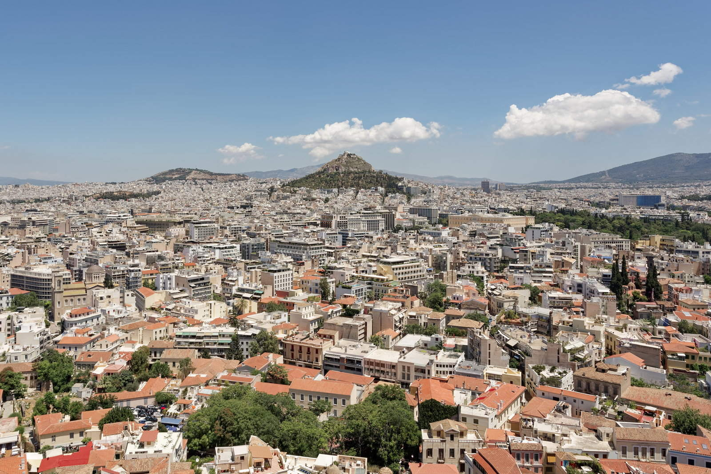
С вершины горы видны Акрополь и другие достопримечательности Афин. На горе находится церковь Святого Георгия XIV века. Название происходит от имени мифического героя Ликаба, сына Геракла. В древности гора была священным местом, посвящённым богине Артемиде. Сегодня вершина горы популярна среди туристов и местных жителей.
Гора Ликабетт — самая высокая точка Афин (277 м), впервые упоминается в трудах Геродота V века до н.э., служила стратегическим пунктом города ещё во времена Древней Греции. В Средние века здесь стояла крепость, позднее гора стала местом паломничества христиан благодаря церкви Святого Георгия, построенной в XIX веке. Знаменита панорамным видом на Афины и окрестности, который открывается с вершины горы.
Athens Museum Of Cycladic
Стиль: современная архитектура
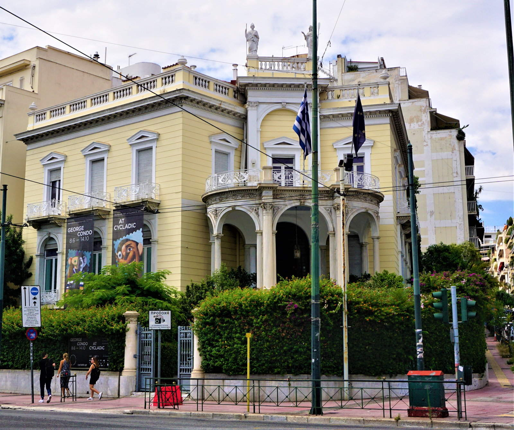
Коллекция музея включает около 7 тысяч экспонатов, представляющих искусство Киклады с IV тысячелетия до н. э. до V века до н. э. Наиболее известные экспонаты — знаменитые белоснежные мраморные статуи Кикладской культуры, датируемые III-II тысячелетием до н. э. Здание музея было спроектировано архитектором Йоргосом Папастратос и представляет собой современное здание, гармонично вписывающееся в окружающий ландшафт. Экспозиция разделена на несколько тематических зон, каждая из которых посвящена определённой эпохе и стилю. Ежегодно музей посещают десятки тысяч туристов и любителей античной культуры.
Музей изящных искусств в Афинах основан в 1986 году, однако музей современного искусства Кикладского искусства был открыт в 2003 году после реконструкции и расширения первоначальной коллекции. Музей посвящён древнему искусству Кикладских островов и содержит богатейшую коллекцию керамики, скульптуры и декоративных предметов периода неолита до классического греческого искусства. Посещение музея позволяет увидеть уникальные артефакты, отражающие художественную традицию древних жителей Кикладских островов, отличающихся утончённым стилем и изысканностью форм.
Athens National Archaeological Museum
Коллекция музея включает около миллиона экспонатов, представляющих различные периоды греческой истории. Наибольший интерес среди посетителей вызывают знаменитые сокровища из Микен и гробницы царей из Орхомена. Здание музея было построено архитектором Спиридоном Лакисосом. Экспозиция охватывает историю Древней Греции от доисторического периода до позднего эллинизма. Архитектура здания вдохновлена древними храмами и колоннадами.
Национальный археологический музей Афин был основан в конце XIX века и открыт в 1889 году. Здание выполнено в стиле неоклассицизма и расположено на территории старинной крепости Акрополь. Музей стал первым крупным учреждением подобного типа в Греции и одной из главных достопримечательностей города. Музей считается одним из крупнейших хранилищ древнегреческих артефактов и привлекает туристов своей уникальной коллекцией античных находок.
Athens National Garden
Период: 1869 год
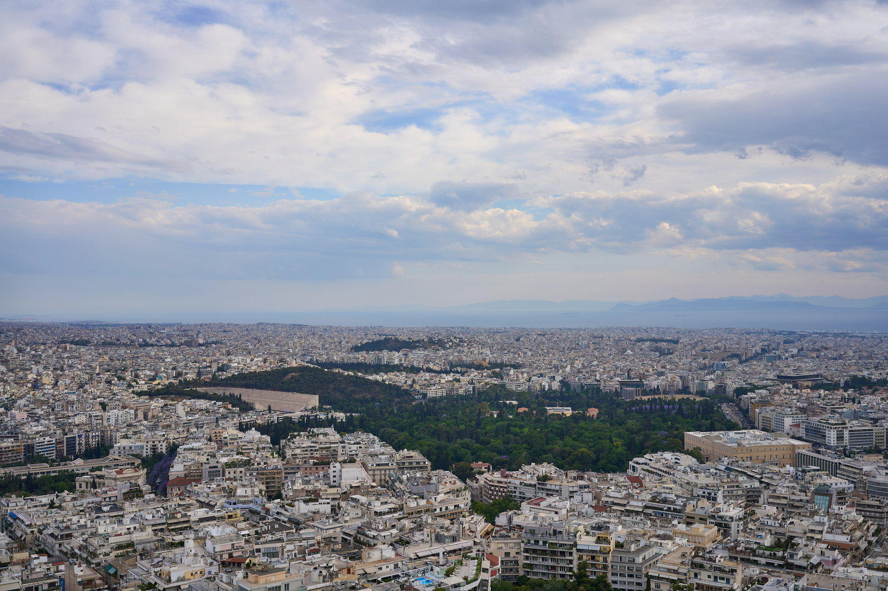
Создан по образцу английских парков, сочетающих природную красоту и ухоженность садов. На территории сада произрастают редкие виды деревьев и кустарников, привезенные из разных уголков мира. Сад окружён высокой каменной стеной, защищающей от шума городской суеты. Ежегодно здесь проводятся выставки цветов и ботанические мероприятия. В саду расположены несколько фонтанов и скульптур, символизирующих греческую мифологию.
Национальный сад Афин был основан в конце XIX века по инициативе короля Георга I и королевы Ольги Греческой. Изначально задумывался как место отдыха королевской семьи и аристократии, однако быстро стал популярным среди афинян и туристов благодаря своей живописной природе и разнообразию растений. Сегодня Национальный сад является одним из символов города и любимым местом прогулок местных жителей и гостей столицы. Национальный сад привлекает посетителей своими прекрасными пейзажами, фонтанами и историческими памятниками, такими как статуя богини Афины и мраморная колоннада.
Athens Numismatic Museum
Стиль: архитектура начала XX века
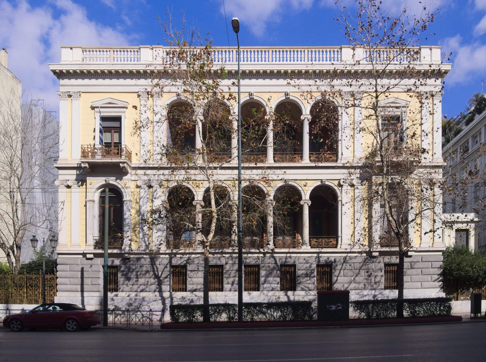
Коллекция музея охватывает более двух тысяч лет истории греческой нумизматики. Экспозиция разделена на несколько тематических залов, каждый из которых посвящен определенному историческому периоду. Особое внимание уделяется коллекциям монет эпохи Александра Македонского и Римской империи. Музей регулярно проводит выставки и организует образовательные мероприятия для широкой публики. Бывшая резиденция премьер-министра Греции является памятником архитектуры начала XX века.
Нумизматический музей Афин основан в 1960 году и расположен в историческом здании бывшей резиденции премьер-министра Греции. Коллекция музея включает монеты и медали различных эпох, начиная от античных времен до современности. Среди экспонатов выделяются редкие экземпляры монет эллинистического периода и римского завоевания. Музей интересен ценителям нумизматики и истории Древней Греции, позволяя увидеть развитие денежной системы страны через века.
Athens Odeon Herodes
Стиль: Римский каменный театр с отреставрированной сценической частью
Первоначально театр вмещал около 5 тысяч зрителей. Реконструкция здания завершилась в 1858 году. Сегодняшний интерьер театра сохранил элементы оригинальной постройки II века. Сцена оборудована современным оборудованием для выступлений. Ежегодно здесь проводятся международные музыкальные фестивали.
Одеон Герода Аттика был построен в 161 году н.э. римским императором Марком Аврелием в Афинах на южном склоне Акрополя. Здание изначально служило местом проведения музыкальных концертов и театральных постановок. Оригинальная конструкция была разрушена землетрясением в V веке, после чего восстановлена византийцами и вновь повреждена во время османского правления. Современное здание было реконструировано в конце XIX века и сегодня используется для летних оперных спектаклей и концертов классической музыки. Здание привлекает туристов своей уникальной архитектурой и атмосферой античности, позволяя насладиться выступлениями знаменитых артистов под открытым небом.
Athens Panathenaic Stadium
Стиль: U-образный стадион выполнен из пентелийского мрамора.
Первый раз реконструирован в римский период, когда были установлены мраморные сидения. Современное название стадиона появилось благодаря реконструкции в конце XIX века. Здесь регулярно проводятся спортивные соревнования, включая футбольный матч открытия Олимпийских игр 2004 года. Считается первым крупным спортивным сооружением, специально предназначенным для зрителей. На стадионе проходили Панафинейские игры, посвящённые богине Афине.
Панатинаикос — древний стадион Афин, построенный в 330 году до н.э., изначально имел каменные трибуны из известняка. В эпоху римского правления, примерно в 144 году н.э., мраморные сиденья заменили старые конструкции. Современная реконструкция стадиона была проведена в XIX веке. Сегодня Панатинаикос является одним из символов Афин и местом проведения спортивных мероприятий. Это место стоит посетить поклонникам спорта и истории Древней Греции, чтобы увидеть один из старейших стадионов Европы и ощутить атмосферу античных соревнований.
Athens Parthenon
Стиль: Дорический перифирельный храм
Парфенон является образцом дорического периптерального храма. Фасады Парфенона украшены рельефами, выполненными мастерской Фидия. Статуя Афины Парфенос была выполнена из золота и слоновой кости. Храм служил символом могущества и процветания Афинского полиса. На фронтоне Парфенона изображалась битва богов и гигантов.
Парфенон — выдающийся памятник древнегреческой архитектуры, возведённый в классический период Афин архитектором Иктином и Калликратом по заказу Перикла. Строительство храма Парфенона длилось около пятнадцати лет и завершилось примерно в 438 году до н.э., хотя отдельные работы продолжались ещё несколько лет. Изначально храм был посвящён богине Афине Парфенос, покровительнице города, и использовался как место поклонения и хранения её культового изображения — знаменитой статуи работы Фидия. Знаменитый архитектурный шедевр Древней Греции, символизирующий величие афинской демократии и искусства V века до н.э.
Athens Psyrri
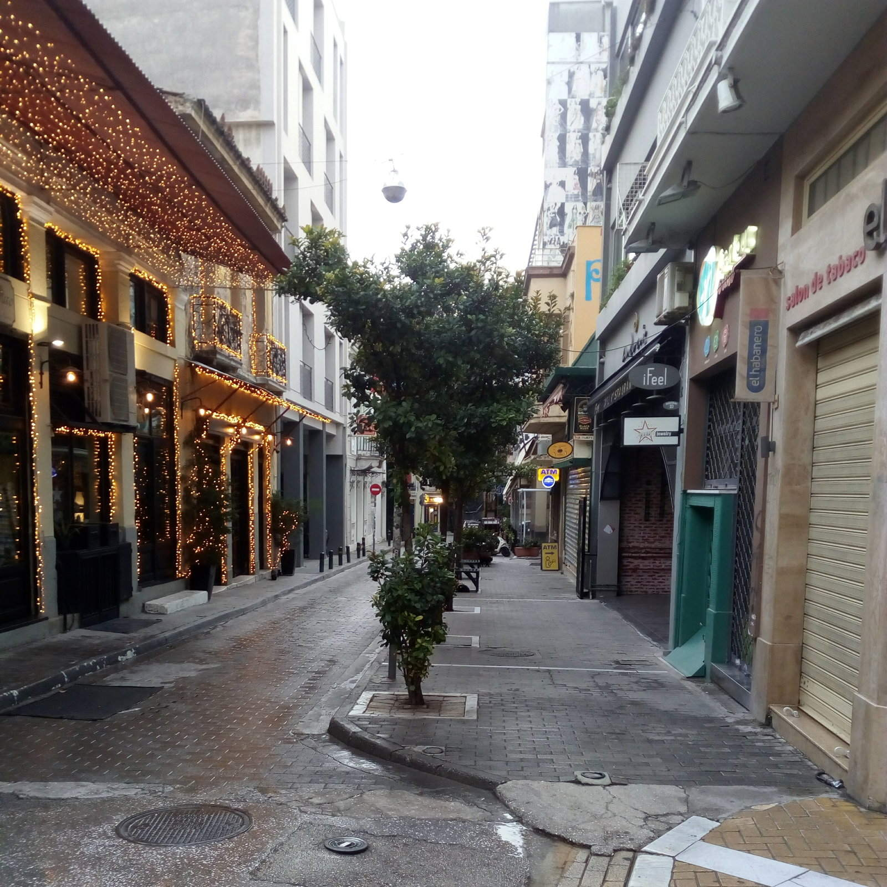
Здесь находится знаменитый археологический комплекс Агорион, представляющий собой остатки древней Агоры. Улицы района известны своей ночной активностью и множеством баров и клубов. Исторически квартал был местом проживания ремесленников и торговцев. Сегодня Psyrri привлекает туристов своей уникальной атмосферой и традиционной греческой кухней. Район также славится фестивалями уличной еды и музыкальными концертами.
Квартал Psyrri расположен в историческом центре Афин и является одним из старейших районов города. Здесь зародилась знаменитая древнегреческая Агора, где проходили важные общественные мероприятия и торговля. Сегодня район сохранил атмосферу средневекового Афинского квартала, сочетая старинную архитектуру с современными кафе и ресторанами. Знаменит своими аутентичными заведениями, атмосферной ночной жизнью и уютными улочками, отражающими дух старого Афин.
Athens Stavros Niarchos
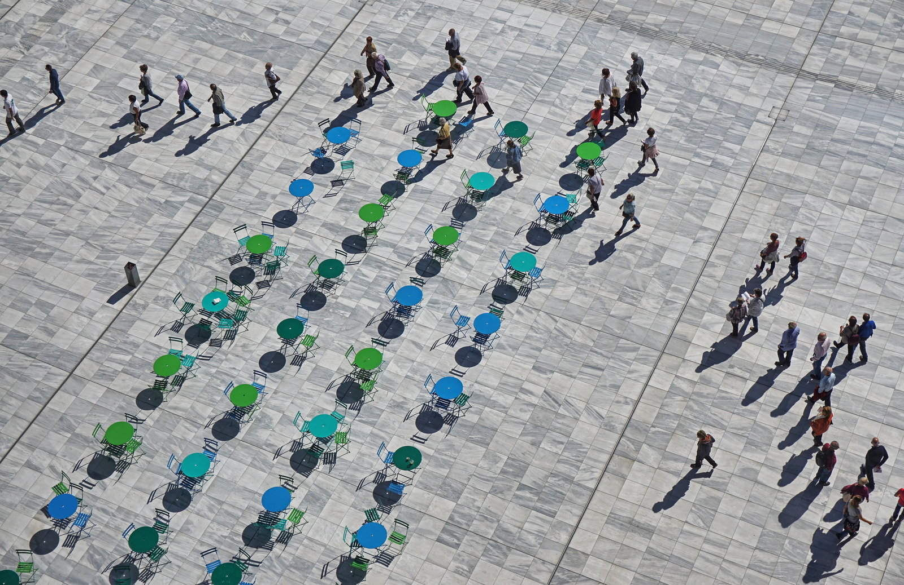
Фонд Ставроса Ниархоса представлен в Афинах. Государственные фотоархивы связывают это место с: Кипр, Айя Варвара, церковь, православный.
Athens Stoa Of Attalos
Стиль: эллинистический двухколонный портик
Реконструированное здание Стоа Атталоса выполнено в оригинальном эллинистическом стиле. Музей расположен непосредственно рядом с руинами Древней агоры. Экспозиция музея включает артефакты, отражающие повседневную жизнь и культурное наследие афинян. Стоа названа в честь царя Аттала II, который изначально построил её в I веке до н. э. Здание является частью комплекса музеев Афинского акрополя.
Стоа Атталоса — реконструкция древнегреческого портика, возведённая в 1952–1956 годах на территории Древней агоры Афин. Здание представляет собой типичный образец двухрядной колоннады эллинистического стиля. Реконструкция выполнена на основе сохранившихся фрагментов древних сооружений и является важным памятником античной архитектуры. Стоа Атталоса служит музеем и выставочным пространством, где представлены археологические находки и экспонаты, раскрывающие историю Древних Афин.
Athens Syntagma Guard
Стиль: неоклассический
Ежедневная смена почётного караула начинается в 11 утра. Могила Неизвестного солдата была открыта в 1932 году. Здание парламента построено в неоклассическом стиле. На площади проводятся официальные государственные церемонии. Евзонские гвардейцы носят традиционные костюмы, разработанные специально для этой службы.
Синтagma-Сquare расположена перед зданием парламента Греции, построенным в неоклассическом стиле в XIX веке. Площадь названа в честь королевского дворца Синтagma («Конституция»), который находился здесь до 1863 года. Ежедневно на площади проходят торжественные смены почётного караула Евзонов — церемониальных гвардейцев в традиционных костюмах, охраняющих могилу Неизвестного солдата. Площадь является символом демократии и независимости Греции, местом проведения государственных мероприятий и памятных церемоний.
Athens Ancient Agora Temple
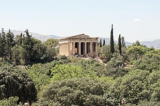
Храм Гефеста – место поклонения в Афинах. Общественные фотоархивы связывают это место с: Афины, храм, город, Храм Гефеста.
Athens Temple Olympian Zeus
Стиль: Коринфский ордер
Это самый большой храм Афинского акрополя после Парфенона. Длина храма составляла около 104 метров, ширина — примерно 44 метра. Колонны храма были выполнены в стиле коринфского ордера, считавшегося наиболее роскошным среди всех классических стилей. На территории храма сохранились остатки статуй Зевса и императора Адриана. После завершения строительства храм использовался преимущественно для проведения торжественных церемоний и религиозных праздников.
Знаменитый храм Зевса Олимпийского был построен ещё в VI веке до н. э., однако строительство затянулось почти на тысячелетие и завершилось лишь во II веке н. э. при императоре Адриане. Храм стал одним из крупнейших и величественных сооружений античности, символизируя могущество Рима и уважение к древнегреческим богам. Храм Зевса Олимпийского является выдающимся памятником архитектуры, отражающим слияние греческой и римской культур, и привлекает туристов своей грандиозностью и исторической ценностью.
Athens Sounion
Стиль: дорический
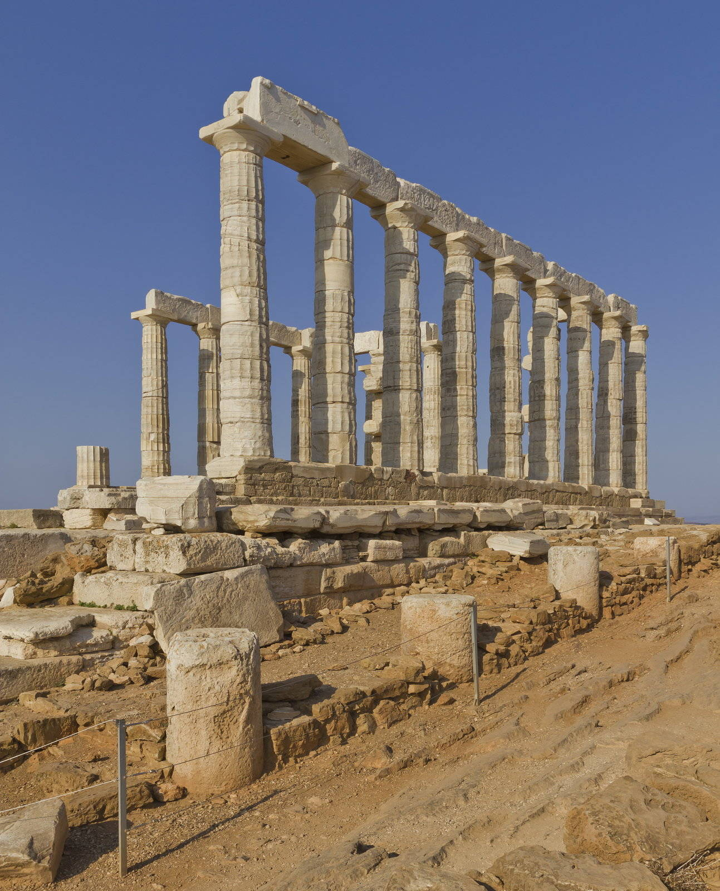
На руинах храма сохранились фрагменты колонн и основания стен. Считается одним из самых красивых античных храмов в мире. Панорамный вид с храма вдохновлял художников и поэтов на протяжении веков. К храму ведет узкая тропа, поднимающаяся вдоль отвесной скалы. Построен в дорическом стиле.
Храм Посейдона в Сунионе построен около IV века до н. э. греческими архитекторами Фидием и Калликратом. Расположенный на высокой скале над Эгейским морем, храм стал символом мощи и величия античной Греции. В древности здесь проводились религиозные церемонии и жертвоприношения в честь бога моря Посейдона. Знаменитое место паломничества туристов благодаря живописному расположению и потрясающим видам на море.
Башня имеет форму правильного восьмиугольника, характерную для архитектуры эллинистического периода. На каждой стороне башни установлены бронзовые фигуры, изображающие древнегреческие ветры. Считается первой метеорологической станцией, совмещённой с солнечными часами. Архитектурный стиль здания относится к позднему классическому периоду и характеризуется строгими пропорциями и симметрией. Руины башни сохранились до наших дней и являются частью археологического комплекса Римской агоры.
Куллорум ветров», построенный в I веке до н. э., является одним из выдающихся архитектурных памятников Древней Греции. Расположенная в районе Римского агора, эта восьмиугольная башня служила одновременно астрономическими часами и погодной станцией. В её верхней части размещались восемь аллегорических статуй ветров, каждая из которых символизировала определённое направление ветра. Башня была построена во времена эллинистической культуры и сохранила уникальные инженерные решения своего времени. Здание привлекает туристов своей необычной архитектурой и сочетанием науки и искусства античности.
Μητρόπολη Αθηνών
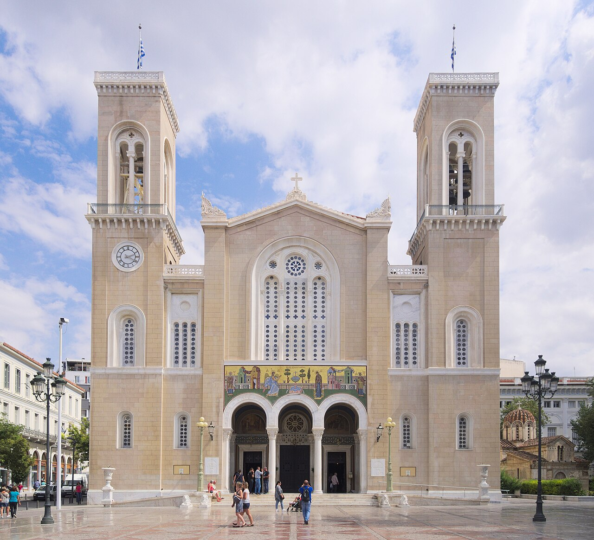
Μητρόπολη Αθηνών — место поклонения в Афинах. Государственные фотоархивы ассоциируют этот объект со следующими темами: Афины, дома, город, здание.